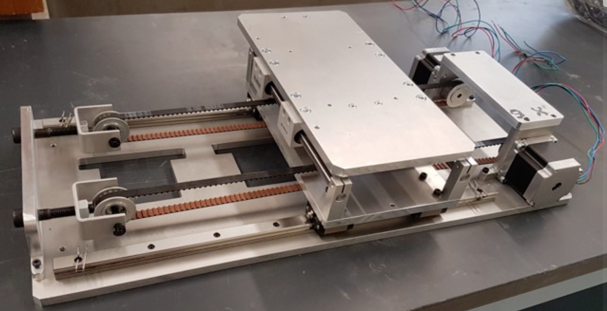
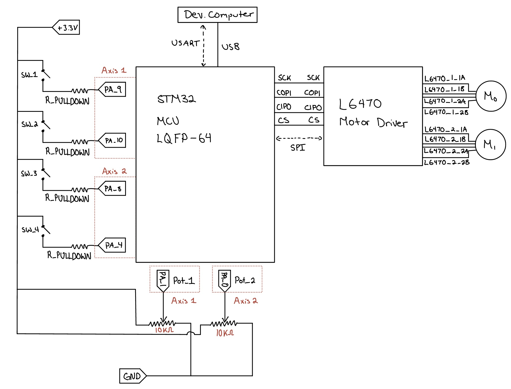
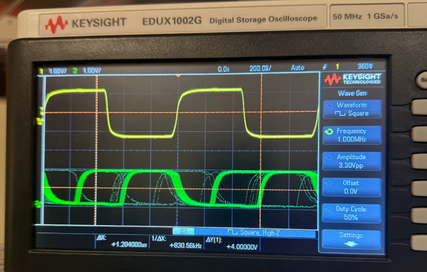
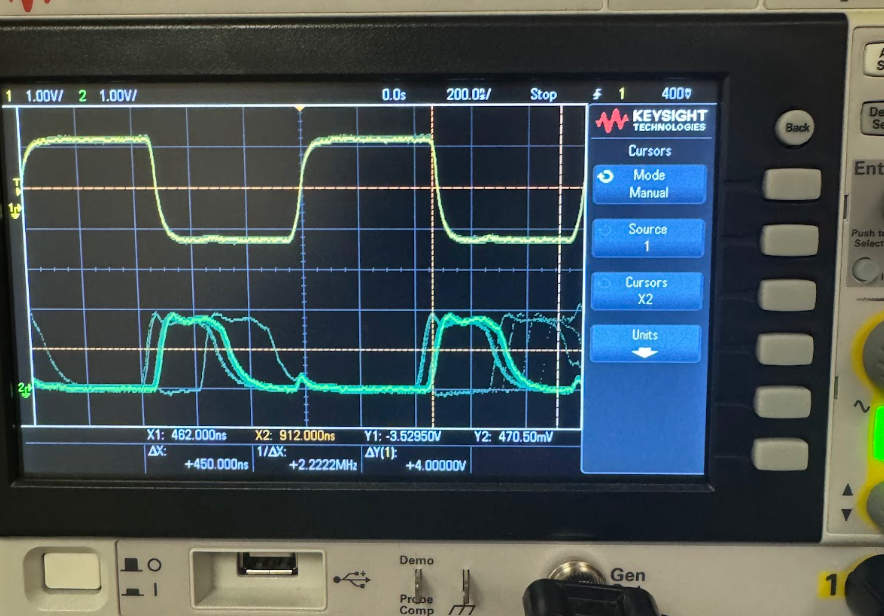
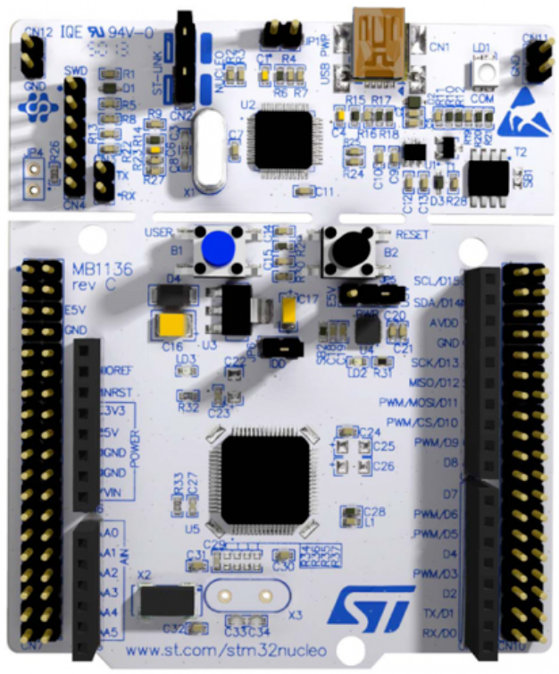
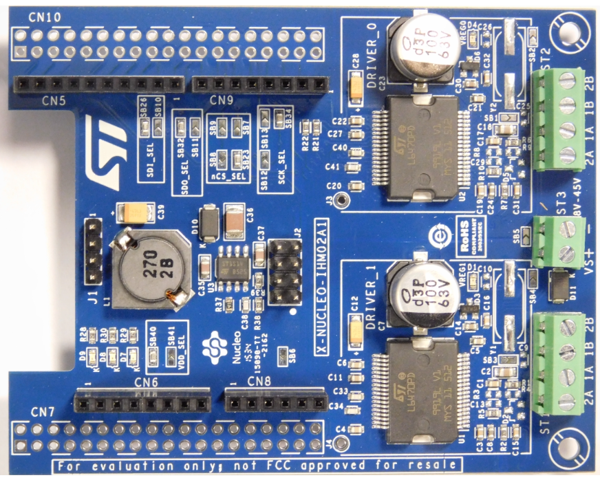

← Back to Home
2-Axis Machine, Realtime Control

Overview
Implemented and controled a 2-axis electromechanical motion system as part of a laboratory-based controls and mechatronics course.
The project focused on low-level embedded control (C), hardware-software integration, and real-time system behaviour.
System Architecture

- Nucleo F401RE MCU - STM32
- Nucleo IHM02A1 servo motor driver shield
- UART protocol for deterministic communication
The system consists of two independently driven axes controlled by an STM32 MCU. Each axis is actuated by a servo motor and monitored
using analog sensor feedback. Motion commands and system state are communicated over a UART serial interface, enabling structured
command-based control and debugging.
Technical Contributions
- Developed embedded firmware on STM32 for real-time motor control
- Implemented UART serial communication for command incput and system monitoring
- Integrated analog interfacing for sensor feedback and signal conditioning
- Tuned control behaviour to achieve smooth, repeatable 2-axis motion
- Debugged timing, noise, and scaling issues common in mixed analog/digital systems
Tight polling vs. HW Interrupt Latency Analysis
Using lab scopes, tight polling and interrup algorithms were analyzed in their speed & latency - along with max MCU clock speed
each approach would not fail under (found to be ~1.3MHz).
Findings
- Tight Polling -> Variance: 336ns w/persistence of 100ms

- Interrupts -> Variance: 220ns - 450ns w/persistence of 100ms

STM32 MCU + Motor Driver Shield:

